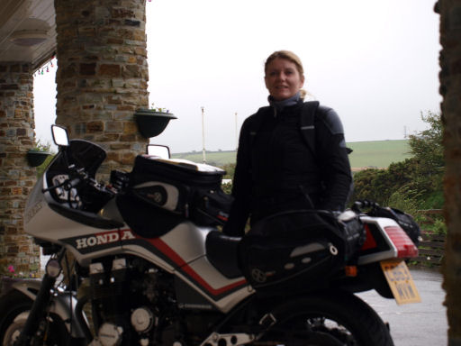
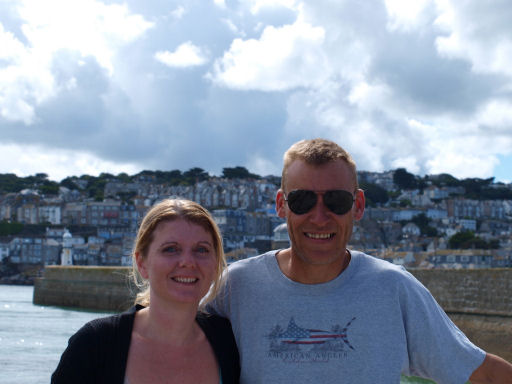
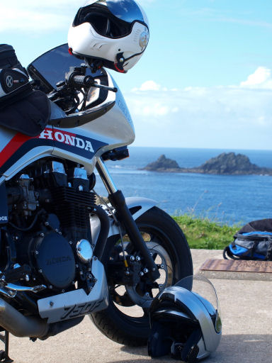
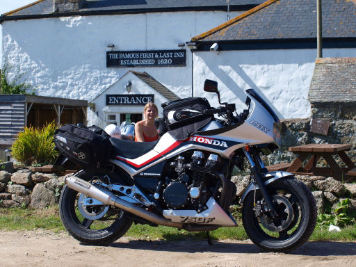
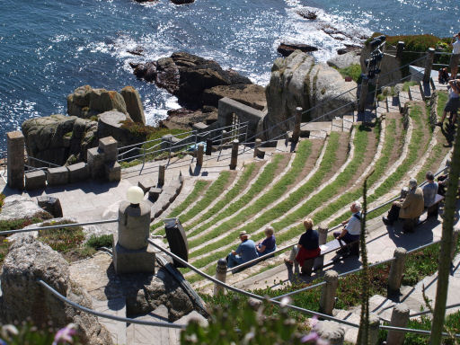
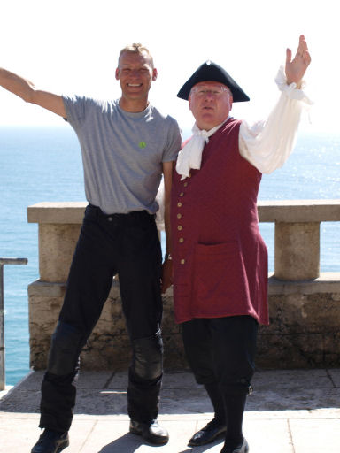

Purpose of trip-see as much of Cornwall as possible. Organisation; our usual, i.e. nothing booked, no route planned, pack bags that morning, lube chain, check oil and go!
View Andy’s Trip in a larger map
Saturday 5th September
We left Byfleet and took the M3, A303 and A30 route towards Cornwall, stopping off at a pub on the A303 for a bite to eat, just past Stone Henge in Wiltshire. At Cornwall border we headed to Bude on the North coast as it seemed as good a place as any to start from. Nice weather all the way. Found a nice pub with rooms a short walk from the sea and parked up for the night. Food and beer until bedime!
Sunday 6th September
Decided to book the same place for the night so we could go off for the day without luggage. Horrible drizzle from the moment we left, getting heavier as we headed right down South towards St.Austell over Bodmin Moor. Visited the Eden Project just outside here, huge ‘Biospheres’ with plants and trees from around the world. Very good, if a bit pricey. Oh, and be warned; walking around the rainforest -sphere in full bike gear gets a really good sweat on! Back up into Bodmin moor for a stop-off at ‘The Jamaica Inn’, probably one of Britains most famous pubs. Sunshine coming out now, so a nice ride back to Bude. Food and beer until bedtime!
Monday 7th September
Woke up to a grey morning. Loaded up and decided to take the roads along the North coast to St. Ives. Heavy rain by now, I take a wrong turn and nearly an hour later see a sign saying ‘Welcome to Devon’. Ooops! Turn around and head in the right direction. By the time we get to the top of Bodmin Moor it’s raining on a ‘Biblical’ scale and blowing us all over the place. Down to under 40 m.p.h. we spot a cafe and shelter. Cornish liquid sunshine!

Photo#1 shows a nearly drowned Lucy putting on a brave face.
Coffees and a look at the map and we deceide to head to Padstow, a lot nearer than St. Ives. Early afternoon and we arrive there and find a B&B right on the harbour. As we step in the rain steps up to ‘Monsoon’. Head off on foot for the afternoon. Visit every pub in Padstow and get back to the B&B worse for wear!
Tuesday 8th September
Leave Padstow in sunshine and head for St.Ives. Take the coast roads/scenic route and arrive in St.Ives early afternoon. Spend half an hour dodging pedestrians and dogs with zero road sense lookin for a B&B. Carefully avoided going down ‘Teetotal Street’, one place we didn’t think was a wise place for the likes of us to stay the night! Found a lovely guest house in a tiny square where the Authoress Daphne DeMaurier used to stay, she who wrote Jamaica Inn’ many years ago. Went to the harbour for a walk, conidered going out on the bike but sat around in the sun all afternoon watching the seals and people fishing instead.

Wednesday 9th September.
Left St. Ives and headed to Cape Cornwall, one of the only 2 Capes in the U.K. ( the other being in Scotland ), which was thought to be the old Land’s End, until they realised the error and moved it! Really unspoilt,

Then on to Land’s End. Ugh!! It’s been turned into a horrible Theme Park thing! Hasty exit and make our way to ‘The First and Last Inn’ ( see photo#4 ), mainland Britain’s most Westerley pub. Then head down to the ‘Minack Open Air Theatre’. Some very interesting roads to get there, wouldn’t fancy going there in the wet! Theatre had a production on so we couldn’t go in, but the views from the clifftops were stunning. Along the South coast to Lizard via Penzance, Marazion, St. Michael’s Mount and Helston. Book into the most Southerly pub in mainland Britain. A visit to the old Lifeboat station, where we saw the biggest seal I think we’ll ever see, then to the Lighthouse and back to the pub. Food and beer until bedtime.
Thursday 10th September
Departed Lizard and went all the way back to the ‘Minack’. This was built by hand by a lady called Rowena Cade and her two gardeners. Spectacular!


Back along the coast to Mevagissey where we found a room for the night. Went to the harbour front for beer and food. The tide was coming in, and in, and in! Sandbags coming out, me thinking about taking the bike to higher ground ( see photo#7 ). The flood finally ebbed and we got chatting to a local, ho informed us this was normal on an Equinox Spring tide. He’d known it to be 3 feet deep in the sops on occasion!
Friday 11th September
Left Mevagissey for the 241 mile ride home, arriving back home mid-afternoon.
If anone gets the chance, give Cornwall a visit, it’s beautiful with really good bikng roads!
Total miles covered on our tour- 841.